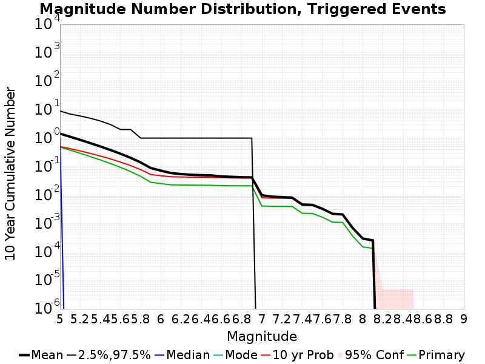
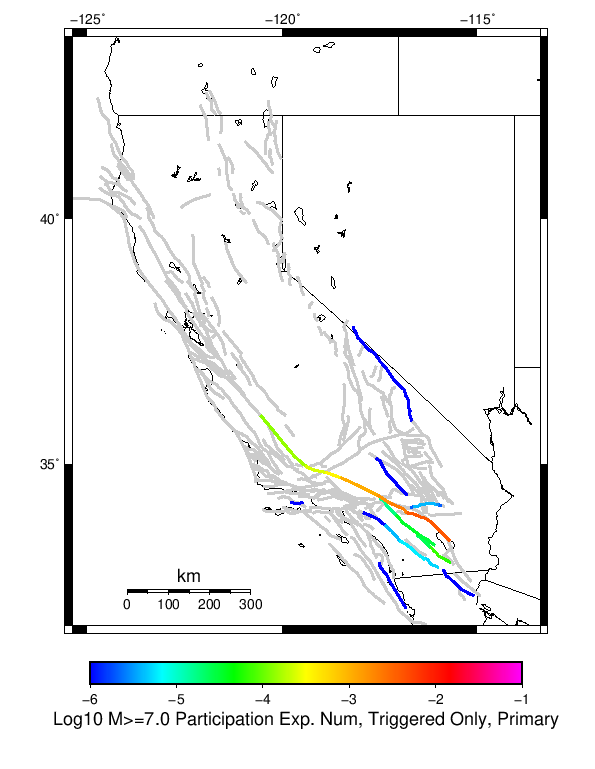

| 2009 Bombay Beach M6 | |
|---|---|
| Num Simulations | 1000000 |
| Start Time | 2019/01/01 00:00:00 UTC |
| Start Time Epoch Milliseconds | 1546300800000 |
| Duration | 10 Years |
| Includes Spontaneous? | false |
| Historical Ruptures | (none) |
Legend

| Mag | Mean | 2.5 %ile | 97.5 %ile | Median | Mode | 10 yr Probability | Primary Aftershocks Mean |
|---|---|---|---|---|---|---|---|
| M≥5 | 1.438 | 0.000 | 9.000 | 1.000 | 0.000 | 0.503 | 0.487 |
| M≥5.1 | 1.120 | 0.000 | 7.000 | 0.000 | 0.000 | 0.426 | 0.378 |
| M≥5.2 | 0.869 | 0.000 | 6.000 | 0.000 | 0.000 | 0.355 | 0.294 |
| M≥5.3 | 0.668 | 0.000 | 5.000 | 0.000 | 0.000 | 0.291 | 0.225 |
| M≥5.4 | 0.509 | 0.000 | 4.000 | 0.000 | 0.000 | 0.235 | 0.171 |
| M≥5.5 | 0.382 | 0.000 | 3.000 | 0.000 | 0.000 | 0.186 | 0.128 |
| M≥5.6 | 0.282 | 0.000 | 2.000 | 0.000 | 0.000 | 0.144 | 0.094 |
| M≥5.7 | 0.203 | 0.000 | 2.000 | 0.000 | 0.000 | 0.108 | 0.067 |
| M≥5.8 | 0.139 | 0.000 | 1.000 | 0.000 | 0.000 | 0.078 | 0.045 |
| M≥5.9 | 0.089 | 0.000 | 1.000 | 0.000 | 0.000 | 0.052 | 0.028 |
| M≥6 | 0.072 | 0.000 | 1.000 | 0.000 | 0.000 | 0.048 | 0.025 |
| M≥6.1 | 0.059 | 0.000 | 1.000 | 0.000 | 0.000 | 0.044 | 0.023 |
| M≥6.2 | 0.054 | 0.000 | 1.000 | 0.000 | 0.000 | 0.043 | 0.023 |
| M≥6.3 | 0.052 | 0.000 | 1.000 | 0.000 | 0.000 | 0.043 | 0.022 |
| M≥6.4 | 0.050 | 0.000 | 1.000 | 0.000 | 0.000 | 0.042 | 0.022 |
| M≥6.5 | 0.049 | 0.000 | 1.000 | 0.000 | 0.000 | 0.042 | 0.022 |
| M≥6.6 | 0.045 | 0.000 | 1.000 | 0.000 | 0.000 | 0.040 | 0.021 |
| M≥6.7 | 0.044 | 0.000 | 1.000 | 0.000 | 0.000 | 0.040 | 0.021 |
| M≥6.8 | 0.042 | 0.000 | 1.000 | 0.000 | 0.000 | 0.040 | 0.021 |
| M≥6.9 | 0.042 | 0.000 | 1.000 | 0.000 | 0.000 | 0.039 | 0.021 |
| M≥7 | 9.81E-3 | 0.000 | 0.000 | 0.000 | 0.000 | 8.07E-3 | 4.11E-3 |
| M≥7.1 | 8.77E-3 | 0.000 | 0.000 | 0.000 | 0.000 | 7.79E-3 | 4.03E-3 |
| M≥7.2 | 8.44E-3 | 0.000 | 0.000 | 0.000 | 0.000 | 7.69E-3 | 4.01E-3 |
| M≥7.3 | 8.12E-3 | 0.000 | 0.000 | 0.000 | 0.000 | 7.59E-3 | 3.98E-3 |
| M≥7.4 | 4.63E-3 | 0.000 | 0.000 | 0.000 | 0.000 | 4.37E-3 | 2.28E-3 |
| M≥7.5 | 4.51E-3 | 0.000 | 0.000 | 0.000 | 0.000 | 4.30E-3 | 2.26E-3 |
| M≥7.6 | 3.28E-3 | 0.000 | 0.000 | 0.000 | 0.000 | 3.14E-3 | 1.66E-3 |
| M≥7.7 | 2.19E-3 | 0.000 | 0.000 | 0.000 | 0.000 | 2.14E-3 | 1.11E-3 |
| M≥7.8 | 2.07E-3 | 0.000 | 0.000 | 0.000 | 0.000 | 2.06E-3 | 1.09E-3 |
| M≥7.9 | 6.90E-4 | 0.000 | 0.000 | 0.000 | 0.000 | 6.90E-4 | 3.60E-4 |
| M≥8 | 2.95E-4 | 0.000 | 0.000 | 0.000 | 0.000 | 2.95E-4 | 1.50E-4 |
| M≥8.1 | 2.54E-4 | 0.000 | 0.000 | 0.000 | 0.000 | 2.54E-4 | 1.33E-4 |
| M≥8.2 | 0.000 | 0.000 | 0.000 | 0.000 | 0.000 | 0.000 | 0.000 |
| M≥8.3 | 0.000 | 0.000 | 0.000 | 0.000 | 0.000 | 0.000 | 0.000 |
| M≥8.4 | 0.000 | 0.000 | 0.000 | 0.000 | 0.000 | 0.000 | 0.000 |
| M≥8.5 | 0.000 | 0.000 | 0.000 | 0.000 | 0.000 | 0.000 | 0.000 |
| M≥8.6 | 0.000 | 0.000 | 0.000 | 0.000 | 0.000 | 0.000 | 0.000 |
| M≥8.7 | 0.000 | 0.000 | 0.000 | 0.000 | 0.000 | 0.000 | 0.000 |
| M≥8.8 | 0.000 | 0.000 | 0.000 | 0.000 | 0.000 | 0.000 | 0.000 |
| M≥8.9 | 0.000 | 0.000 | 0.000 | 0.000 | 0.000 | 0.000 | 0.000 |
| M≥9 | 0.000 | 0.000 | 0.000 | 0.000 | 0.000 | 0.000 | 0.000 |
These plots show how the probability of ruptures of various magnitudes within 100km of any scenario rupture changes over time
| Forecast Duration | UCERF3-ETAS [95% Conf] | UCERF3-ETAS Triggered Only | UCERF3-TD | UCERF3-TI |
|---|---|---|---|---|
| 1 Hour | 0.105 [0.104 - 0.105] | 0.105 | 8.84E-5 | 8.75E-5 |
| 1 Day | 0.244 [0.243 - 0.245] | 0.242 | 2.12E-3 | 2.10E-3 |
| 1 Week | 0.327 [0.326 - 0.328] | 0.317 | 0.015 | 0.015 |
| 1 Month | 0.407 [0.406 - 0.407] | 0.367 | 0.062 | 0.061 |
| 1 Year | 0.743 [0.743 - 0.744] | 0.442 | 0.540 | 0.536 |
| 10 Years | 1.000 [1.000 - 1.000] | 0.500 | 1.000 | 1.000 |
| 30 Years | 1.000 [1.000 - 1.000] * | * | 1.000 | 1.000 |
| 100 Years | 1.000 [1.000 - 1.000] * | * | 1.000 | 1.000 |
* forecast duration is longer than simulation length, only ETAS ruptures from the first 10 years are included

| Forecast Duration | UCERF3-ETAS [95% Conf] | UCERF3-ETAS Triggered Only | UCERF3-TD | UCERF3-TI |
|---|---|---|---|---|
| 1 Hour | 5.96E-3 [5.81E-3 - 6.11E-3] | 5.95E-3 | 1.18E-5 | 1.09E-5 |
| 1 Day | 0.016 [0.016 - 0.017] | 0.016 | 2.84E-4 | 2.61E-4 |
| 1 Week | 0.025 [0.025 - 0.025] | 0.023 | 1.98E-3 | 1.83E-3 |
| 1 Month | 0.037 [0.036 - 0.037] | 0.028 | 8.48E-3 | 7.81E-3 |
| 1 Year | 0.133 [0.133 - 0.133] | 0.038 | 0.099 | 0.091 |
| 10 Years | 0.668 [0.668 - 0.668] | 0.047 | 0.652 | 0.615 |
| 30 Years | 0.959 [0.959 - 0.959] * | * | 0.957 | 0.943 |
| 100 Years | 1.000 [1.000 - 1.000] * | * | 1.000 | 1.000 |
* forecast duration is longer than simulation length, only ETAS ruptures from the first 10 years are included

| Forecast Duration | UCERF3-ETAS [95% Conf] | UCERF3-ETAS Triggered Only | UCERF3-TD | UCERF3-TI |
|---|---|---|---|---|
| 1 Hour | 9.33E-4 [8.75E-4 - 9.95E-4] | 9.30E-4 | 2.98E-6 | 2.25E-6 |
| 1 Day | 2.65E-3 [2.55E-3 - 2.75E-3] | 2.58E-3 | 7.14E-5 | 5.39E-5 |
| 1 Week | 4.28E-3 [4.16E-3 - 4.40E-3] | 3.78E-3 | 5.00E-4 | 3.77E-4 |
| 1 Month | 6.88E-3 [6.74E-3 - 7.01E-3] | 4.75E-3 | 2.14E-3 | 1.62E-3 |
| 1 Year | 0.032 [0.032 - 0.032] | 6.41E-3 | 0.026 | 0.020 |
| 10 Years | 0.232 [0.232 - 0.233] | 7.96E-3 | 0.226 | 0.179 |
| 30 Years | 0.525 [0.525 - 0.525] * | * | 0.521 | 0.446 |
| 100 Years | 0.880 [0.880 - 0.880] * | * | 0.879 | 0.860 |
* forecast duration is longer than simulation length, only ETAS ruptures from the first 10 years are included

| Forecast Duration | UCERF3-ETAS [95% Conf] | UCERF3-ETAS Triggered Only | UCERF3-TD | UCERF3-TI |
|---|---|---|---|---|
| 1 Hour | 2.91E-5 [1.99E-5 - 4.24E-5] | 2.90E-5 | 1.37E-7 | 1.27E-7 |
| 1 Day | 1.09E-4 [9.05E-5 - 1.32E-4] | 1.06E-4 | 3.29E-6 | 3.05E-6 |
| 1 Week | 1.70E-4 [1.48E-4 - 1.96E-4] | 1.47E-4 | 2.30E-5 | 2.14E-5 |
| 1 Month | 2.81E-4 [2.56E-4 - 3.10E-4] | 1.82E-4 | 9.87E-5 | 9.15E-5 |
| 1 Year | 1.44E-3 [1.41E-3 - 1.47E-3] | 2.37E-4 | 1.20E-3 | 1.11E-3 |
| 10 Years | 0.011 [0.011 - 0.011] | 2.93E-4 | 0.011 | 0.011 |
| 30 Years | 0.027 [0.027 - 0.027] * | * | 0.027 | 0.033 |
| 100 Years | 0.043 [0.043 - 0.043] * | * | 0.043 | 0.105 |
* forecast duration is longer than simulation length, only ETAS ruptures from the first 10 years are included
| Min Mag | Triggered Ruptures (no spontaneous) | Triggered Ruptures (primary aftershocks only) |
|---|---|---|
| All Supra. Seis. |  |  |
| M≥6.5 |  |  |
| M≥7 |  |  |
| M≥7.5 |  |  |
| M≥8 |  |  |
First 10 of 116 with matching ruptures shown
| Parent Name | Triggered Mean Count | Triggered 10 Year Prob | Triggered Primary Mean Count |
|---|---|---|---|
| San Andreas (Coachella) rev | 0.038783 | 0.038736 | 0.020819 |
| San Andreas (San Gorgonio Pass-Garnet HIll) | 0.007445 | 0.007437 | 0.003931 |
| San Andreas (San Bernardino S) | 0.004249 | 0.004231 | 0.002237 |
| San Andreas (San Bernardino N) | 0.003183 | 0.003157 | 0.00164 |
| San Andreas (Mojave S) | 0.002166 | 0.002157 | 0.001103 |
| Cucamonga | 0.001609 | 0.001609 | 2.0E-6 |
| Cleghorn | 0.001284 | 0.001279 | 0.0 |
| Elmore Ranch | 9.31E-4 | 9.31E-4 | 4.49E-4 |
| San Jacinto (San Bernardino) | 9.14E-4 | 9.05E-4 | 1.6E-5 |
| San Andreas (Mojave N) | 7.74E-4 | 7.74E-4 | 3.66E-4 |
First 10 of 109 with matching ruptures shown
| Parent Name | Triggered Mean Count | Triggered 10 Year Prob | Triggered Primary Mean Count |
|---|---|---|---|
| San Andreas (Coachella) rev | 0.038783 | 0.038736 | 0.020819 |
| San Andreas (San Gorgonio Pass-Garnet HIll) | 0.007445 | 0.007437 | 0.003931 |
| San Andreas (San Bernardino S) | 0.004249 | 0.004231 | 0.002237 |
| San Andreas (San Bernardino N) | 0.003183 | 0.003157 | 0.00164 |
| San Andreas (Mojave S) | 0.002166 | 0.002157 | 0.001103 |
| Cucamonga | 0.001609 | 0.001609 | 2.0E-6 |
| Cleghorn | 0.001284 | 0.001279 | 0.0 |
| Elmore Ranch | 9.31E-4 | 9.31E-4 | 4.49E-4 |
| San Jacinto (San Bernardino) | 9.14E-4 | 9.05E-4 | 1.6E-5 |
| San Andreas (Mojave N) | 7.74E-4 | 7.74E-4 | 3.66E-4 |
First 10 of 65 with matching ruptures shown
| Parent Name | Triggered Mean Count | Triggered 10 Year Prob | Triggered Primary Mean Count |
|---|---|---|---|
| San Andreas (San Gorgonio Pass-Garnet HIll) | 0.007439 | 0.007431 | 0.003931 |
| San Andreas (Coachella) rev | 0.007331 | 0.007331 | 0.003932 |
| San Andreas (San Bernardino S) | 0.004245 | 0.004228 | 0.002236 |
| San Andreas (San Bernardino N) | 0.003147 | 0.003125 | 0.001639 |
| San Andreas (Mojave S) | 0.002164 | 0.002156 | 0.001103 |
| San Jacinto (San Bernardino) | 8.74E-4 | 8.66E-4 | 1.6E-5 |
| San Andreas (Mojave N) | 7.61E-4 | 7.61E-4 | 3.66E-4 |
| San Andreas (Big Bend) | 5.08E-4 | 5.08E-4 | 2.35E-4 |
| San Jacinto (Stepovers Combined) | 4.81E-4 | 4.73E-4 | 3.4E-5 |
| San Andreas (Carrizo) rev | 3.62E-4 | 3.62E-4 | 1.52E-4 |
First 10 of 30 with matching ruptures shown
| Parent Name | Triggered Mean Count | Triggered 10 Year Prob | Triggered Primary Mean Count |
|---|---|---|---|
| San Andreas (San Bernardino S) | 0.004157 | 0.004147 | 0.002226 |
| San Andreas (San Gorgonio Pass-Garnet HIll) | 0.004138 | 0.004135 | 0.002224 |
| San Andreas (Coachella) rev | 0.004121 | 0.004121 | 0.002223 |
| San Andreas (San Bernardino N) | 0.003083 | 0.003072 | 0.001638 |
| San Andreas (Mojave S) | 0.002122 | 0.002114 | 0.001102 |
| San Andreas (Mojave N) | 7.57E-4 | 7.57E-4 | 3.66E-4 |
| San Andreas (Big Bend) | 5.07E-4 | 5.07E-4 | 2.35E-4 |
| San Andreas (Carrizo) rev | 3.59E-4 | 3.59E-4 | 1.52E-4 |
| San Andreas (Cholame) rev | 3.22E-4 | 3.22E-4 | 1.41E-4 |
| San Andreas (Parkfield) | 2.98E-4 | 2.98E-4 | 1.34E-4 |
| Parent Name | Triggered Mean Count | Triggered 10 Year Prob | Triggered Primary Mean Count |
|---|---|---|---|
| San Andreas (Big Bend) | 2.95E-4 | 2.95E-4 | 1.5E-4 |
| San Andreas (Carrizo) rev | 2.95E-4 | 2.95E-4 | 1.5E-4 |
| San Andreas (Mojave N) | 2.95E-4 | 2.95E-4 | 1.5E-4 |
| San Andreas (Mojave S) | 2.95E-4 | 2.95E-4 | 1.5E-4 |
| San Andreas (San Bernardino N) | 2.95E-4 | 2.95E-4 | 1.5E-4 |
| San Andreas (San Bernardino S) | 2.95E-4 | 2.95E-4 | 1.5E-4 |
| San Andreas (San Gorgonio Pass-Garnet HIll) | 2.93E-4 | 2.93E-4 | 1.5E-4 |
| San Andreas (Coachella) rev | 2.88E-4 | 2.88E-4 | 1.5E-4 |
| San Andreas (Cholame) rev | 2.73E-4 | 2.73E-4 | 1.41E-4 |
| San Andreas (Parkfield) | 2.6E-4 | 2.6E-4 | 1.34E-4 |
| Min Mag | Triggered Ruptures (no spontaneous) | Triggered Ruptures (primary aftershocks only) |
|---|---|---|
| M≥5 |  |  |
| M≥6 |  | |
| M≥7 |  |  |
{
"numSimulations": 1000000,
"duration": 10.0,
"startYear": 2019,
"includeSpontaneous": false,
"randomSeed": 987654321,
"binaryOutput": true,
"binaryOutputFilters": [
{
"prefix": "results_complete",
"descendantsOnly": false
},
{
"prefix": "results_m5_preserve_chain",
"minMag": 5.0,
"preserveChainBelowMag": true,
"descendantsOnly": false
}
],
"forceRecalc": false,
"reuseERFs": false,
"simulationName": "2009 Bombay Beach M6",
"numRetries": 3,
"outputDir": "${ETAS_SIM_DIR}/2019_04_25-2009BombayBeachM6-u2mapped-noSpont-10yr",
"triggerRuptures": [
{
"mag": 6.0,
"latitude": 33.3172,
"longitude": -115.72800000000001,
"depth": 5.96
}
],
"cacheDir": "${ETAS_LAUNCHER}/inputs/cache_u2_mapped_fm3p1",
"fssFile": "${ETAS_LAUNCHER}/inputs/ucerf2_mapped_fm3p1.zip",
"probModel": "FULL_TD",
"applySubSeisForSupraNucl": true,
"totRateScaleFactor": 1.14,
"gridSeisCorr": true,
"timeIndependentERF": false,
"griddedOnly": false,
"imposeGR": false,
"includeIndirectTriggering": true,
"gridSeisDiscr": 0.1,
"catalogCompletenessModel": "RELAXED"
}